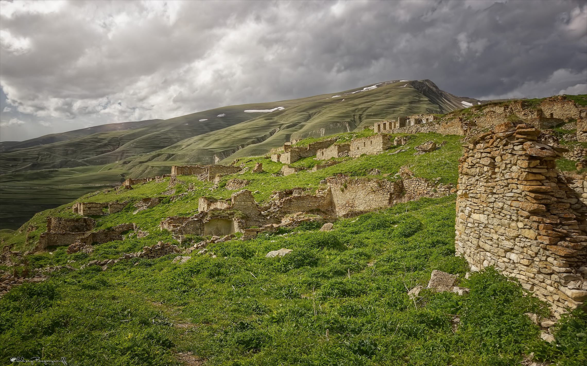
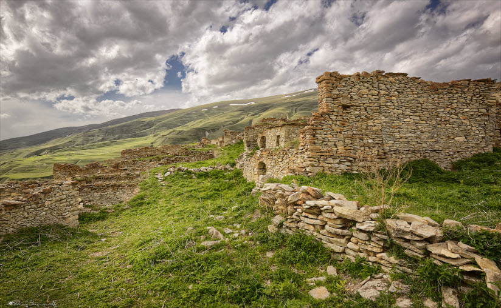
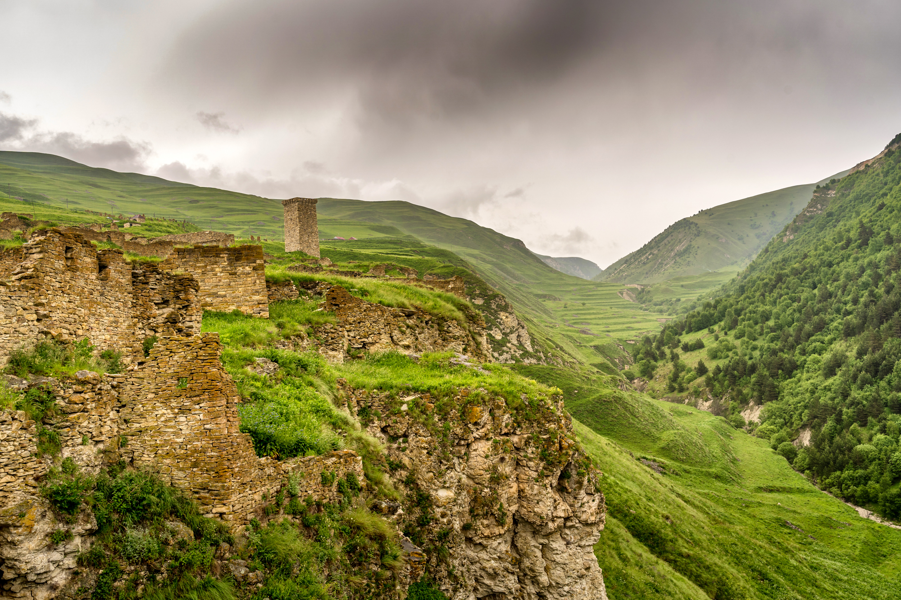

Древний город Хой
Старинный «город стражников» посреди гор и альпийских лугов в Веденском районе. На протяжении своей
многовековой истории выполнял функции сторожевого пункта на границе с Дагестаном и другими
территориями. Сохранились фрагменты каменных построек, сооруженных без капли раствора, а также
древние захоронения. Во время войны ущелье серьезно пострадало.